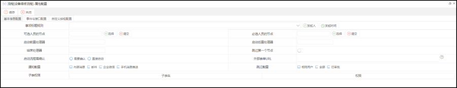
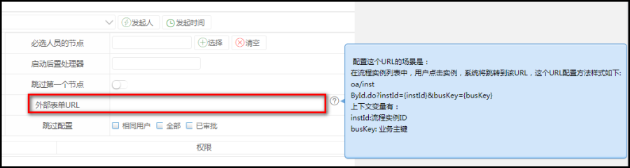
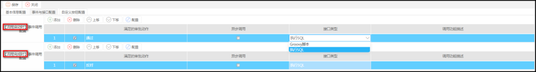
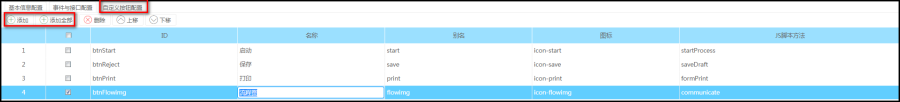
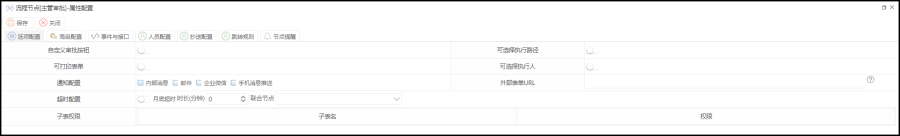

功能描述
流程方案在执行过程中,当我们需要对其一些流程定义节点进行属性的配置,如消息通知,流程变量的配置,抄送消息,催办提醒等,这时我们进入节点属性进行相关属性配置。
操作步骤

1.点击节点属性配置,进入弹出的节点属性配置页中。
点击某个节点属性配置按钮，例如流程方案发起时需要跳过第一个节点,或者设置其他节点审批人员等,我们在下图弹窗中配置节点属性。
【配置属性说明】
1.事项标题规则:定义流程方案任务标题
2.可选人员的节点:流程方案发起时可设置流程定义节点中审批人员
3.必选人员的节点:流程方案发起是必须设置流程定义节点中审批人员
4.启动前置处理器:配置实现ProcessStartAfterHandler,TaskAfterHandler,ProcessEndHandler三个接口Manager类(可看业务实现接口)
5.启动后置处理器:配置实现ProcessStartAfterHandler,TaskAfterHandler,ProcessEndHandler三个接口Manager类(可看业务实现接口)
6.结束处理器:配置实现ProcessStartAfterHandler,TaskAfterHandler,ProcessEndHandler三个接口Manager类(可看业务实现接口)
7.跳过第一个节点:流程方案发起后跳过流程定义第一个节点
8.通知配置:配置全局通知配置,如配置节点,节点优先,再到全局
9.子表权限:设置全局表单中子表数据权限
10.事件脚本配置:脚本是写Groovy脚本,也就java脚本,通过脚本处理一些业务
11.外部表单url:可以配置URL地址（/bpm/core/bpmSolution/mgr.do（随便写的）?solId=solId&actDefId=actdDefId），在流程实例中，用户点击实例，系统会跳转到配置url的页面

事件和接口配置页面

流程启动时：在流程启动时审批动作是通过的话会调用事件或者接口，接口类型有Groovy脚本和执行sql语句
流程结束时：在流程结束后审批动作是反对的话就会调用事件和接口
自定义按钮配置页面

1.1点击某节点,进入该节点属性配置界面。

【节点配置属性说明】
1.选项配置:配置该节点属性配置
1.1.自定义审批按钮:定义该节点审批按钮
1.2.可选择执行路径:如该节点有多条线往下个节点,可设置指定单一线往指定节点
1.3.相同审批人则跳过:当前节点和下个节点都是相同审批人员,则跳过
1.4.在表单展示审批意见:
1.5.打印表单:配置审批节点是否可打印表单
1.6.可选择执行人:设置可选择下个节点执行人
1.7.通知配置:设置到该任务节点发送消息
1.8.使用表单意见:设置表单中是否使用意见控件
1.9.子表权限:设置该任务节点子表权限
2.0.外部表单url：可以配置URL地址（/bpm/core/bpmSolution/mgr.do（随便写的）?solId=solId&actDefId=actdDefId），在流程实例中，用户点击实例，系统会跳转到配置url的页面
2.高级选项:配置实现TaskAfterHandler接口类
3.事件脚本:脚本是写Groovy脚本,也就java脚本,通过脚本处理一些业务
4.人员配置:设置该节点审批人员
5.抄送配置:配置流程任务到该节点抄送一条流程实例信息至其他用户
6.节点提醒:配置到达该节点,审批任务时文字提醒